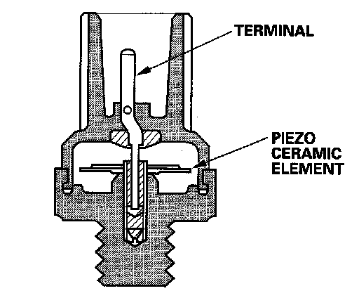

Operation CHARM
: Car repair manuals for everyone.
Home
>>
Honda
>>
2007
>>
Civic Si L4-2.0L
>>
Repair and Diagnosis
>>
Powertrain Management
>>
Ignition System
>>
Sensors and Switches - Ignition System
>>
Knock Sensor
>>
Description and Operation
Knock Sensor: Description and Operation

Knock Sensor
The knock control system adjusts the ignition timing to minimize knock.